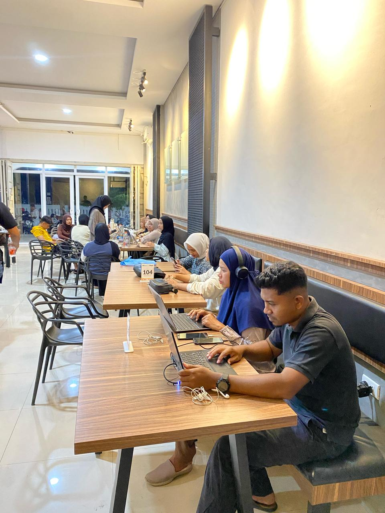

Khair Academic Solution hadir untuk membantu Anda menavigasi tantangan dunia akademik. Kami memastikan ide-ide brilian Anda terstruktur dengan baik dan siap untuk dipublikasikan secara nasional maupun internasional.
Dukungan penuh untuk kebutuhan akademik tingkat lanjut.